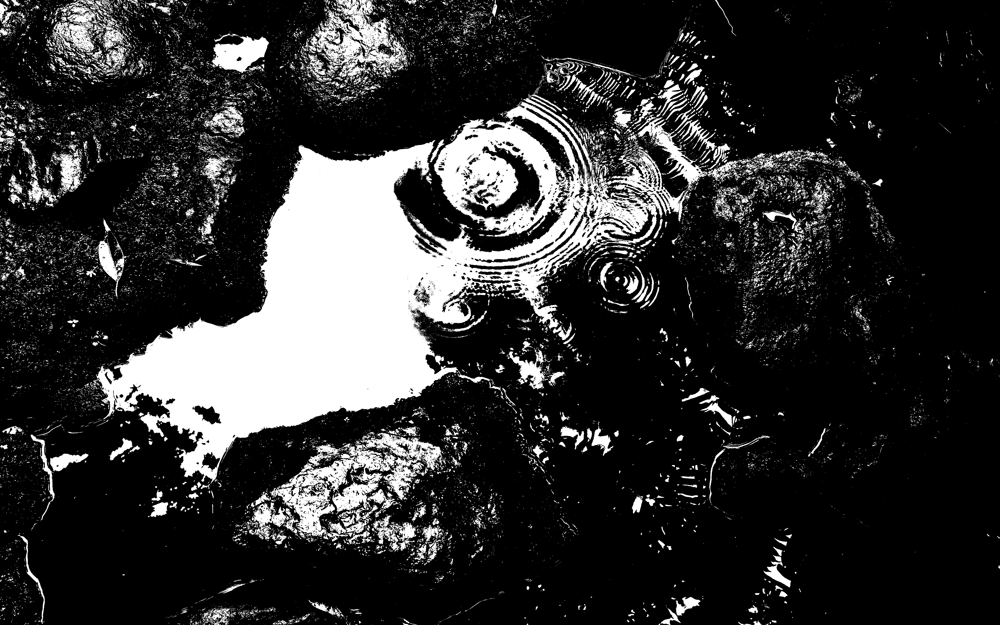

Rather than an activity with a clear outcome, design has also become a medium itself, a system of signs.
From economic flows and legal infrastructures to interfaces, virtual addresses and augmented realities, we are dealing with another type of world that generates economic value from information, fictional, false, or real. The stacks of information technology designed to blur geographic, economic, and political layers. In the face of these evolutions, how is our consciousness, cognition, and body affected?
CONCIOUSNESS, COGNITION, AND BODY
It seems algorithms on the loose govern us. We are the voluntary captives of the cloud.
Design has become a ghost up in the air. In this system of invisible processes, our bodies also count as information. Filter bubbles are introduced to manage and predict our behaviour. Captcha software turns people into sophisticated sensory constituents; biometric capture technologies manage our identities. Siri and other virtual assistants trick us into falling in love with “them”; while bots and trolls influence how we think and act.
AFFECTED?
We are battling an army of anonymous digital foot soldiers; yet within this space in which our risk probabilities are calculated, our options tested and our outcomes pre-designed, there’s a space of real possibility and responsibility. If we no longer exist as mere “users” but as “constituents”, perhaps we can take our new role more actively and creatively as part of a complex ecology of linkages between different actors.
(from interfaces
to algorithms
All these different actors (from interfaces to algorithms and from objects to media) have different dispositions – a tendency, activity, faculty or property – that have a specific relationship to one another other. By hacking or navigating these dispositions it is possible to shift or restructure our realm of possibility.
and from objects
to media)
It’s not about the pebble dropped in the water, but the ripples it produces. From this perspective, it’s necessary to redefine design as an “active form” or critical tool that helps us navigate a netted world mediated by intangible and invisible processes. Better than to hold on to design entangled in a modern, material culture (the pebble), let’s start to also imagine design as a practice that maps, intervenes and challenges existing processes and repurposes them towards other (more exciting) ends (the ripples).

The Ripples.
Perhaps “the job of Design in the 21st century is to undo (much of) the Design of the 20th”.
Not only is it necessary to undo what exists, but also to design and reconfigure the normative relationships between things such as contracts, protocols, mediation, communication flows, and social or digital encounters. Design has the powerful faculty to create new meaning. Simulation, resistance, reappropriation and negotiation are only a few of the strategies designers with a critical attitude can apply to produce other narratives, what one might call a form of critical imagineering.
We can find a mode of resistance in the work of Swiss graphic designer and researcher Simone C. Niquille. Commenting on global standards of identification, such as facial recognition, her work proposes how we can protect our identities from being exploited or even misread. Proxy Body (2016) scans human skins and bodies to then print the scans on fabric to create wearable objects that lend us other identities. In Facebay Skinz (2015) faces taken from a face database are featured on adhesive smartphone covers. The protective adhesive recreates and distorts the face of the person owning the phone.
The artist Zach Blas goes one step further in his thinking about protection from pervasive surveillance by undermining the bias of the normative gaze and its insidious return to
“THE ABLEIST, CLASSIST, HOMOPHOBIC, RACIST, SEXIST, AND TRANSPHOBIC SCIENTIFIC ENDEAVOURS OF THE 19TH CENTURY.”
A critical comment is also apparent in the installations of the designer Henrique Nascimento, who observes how labour is disappearing through the rise of robotics and AI. With his project Guidelines for the Human Factor, Nascimento developed an algorithm-based workspace where the robot plays the role of a moderator, while humans discuss a relevant topic connected to a real world situation. According to a set of rules and based on voice recognition, the algorithms participate in the dialogue by offering references that influence the dialogue between the humans. In a way, the project comments on the role of bots and trolls that participate in online debates, influencing public opinion.
As artists Bik Van der Pol suggest in The Search Drive: A Hackography Begins, a plea for cognitive activism,
“WE ARE WITNESSING A SHIFT FROM A FORM OF DATA SEARCHING AND SURVEILLANCE IN WHICH REAL FINGERS AND THUMBS OF REAL HANDS CONNECTED TO THE REAL BODIES REVEALING THEMSELVES BY MAKING TAPPING SOUNDS ON KEYBOARDS, ARE BEING SUBSTITUTED BY A DISEMBODIED ALGORITHMICALLY GENERATED SYSTEM OF TOTAL SILENCE.”
But Nascimento’s project also proposes a model in which humans take on
an active role, in full awareness of the invisible process that backs them up. The outcome of the conversation produces a ‘conversation piece’ emerging as a hologram: a co-production between human and machine.
By materialising what designers want to address and hope to change, we are presented with an understanding of what’s at play – a tangible visualisation of a ‘light’ and ‘liquid’, software-based modernity as Zygmunt Bauman describes in his book Liquid Modernity. Design needs to appropriate these disruptive fluid mechanisms; or ripples. The future is where a product becomes a process, a narrative a performance; creating an unpredictable reality of a cloud, a ghost like an amazon that knows what you might like. Rather than being governed by these ghosts like puppets in a spectacle, we need to become the active actors on the stage.